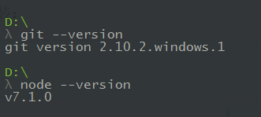
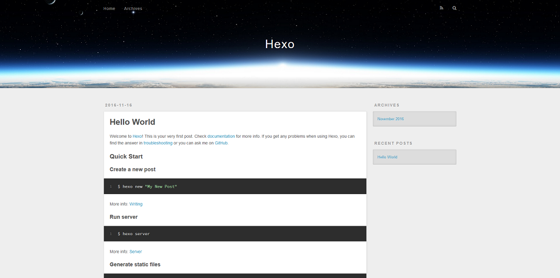

Hexo 是一个由 Node.js 驱动的快速、简洁、高效的博客框架。
Hexo 具有许多优点，使用它我们可以快速地搭建自己的本地博客站点，并能将其推送到 GitHub 仓库。
这篇文章简单介绍了 Hexo 地安装及初次使用。
安装前提
此处不再赘述以上二者的安装过程，点击链接去官网下载与自己操作系统对应的版本，按照默认配置一步步安装即可。
安装完之后，命令提示符输入以下命令检测是否成功安装：
|
|

出现上图所示的提示信息，即成功安装 Git 和 Node.js，如此，方可进行后续操作。
安装 Hexo
在命令行输入以下命令，以将 Hexo 安装到全局环境：
|
|
成功安装后，会出现诸如 -- hexo-cli@1.0.2 的提示信息。
注意！提示信息末尾可能会出现 npm WARN 警告信息，不过不要怕，那不会影响使用的，只要不是 npm ERROR 错误消息就好 (^_^)！
初始化站点文件夹
接下来，我们将运行命令初始化一个新的文件夹，作为我们的本地站点：
|
|
以上命令将先在当前路径下新建一个名为 hexo 的文件夹，然后 Hexo 会对其初始化，即从远程 git 仓库 clone 站点所需的文件。
接着，进入新建的站点文件夹 hexo，继续安装站点文件所需的 npm 包依赖：
|
|
现在，我们文件夹的目录结构看起来应该像下面这个样子：
|
|
安装服务器
Hexo 3.0 把服务器独立成了个别模块，我们必须得在站点文件夹根目录下安装之后才能使用。
在命令行中打开我们的 hexo 文件夹，键入以下命令，以将 hexo-server 安装到我们的 hexo 文件夹：
|
|
Hexo站点初体验
接下来，我们演示一下 Hexo 生成的静态站点。
别担心，尽管到现在为止我们一篇文章也没写，而且站点主题也没经过任何配置，但还是会看到效果的。因为 Hexo 初始化的全新站点文件夹有一个内置的默认主题样式，同时也有一篇 Hello World 文章。
清除缓存文件
|
|
此命令用于清除缓存文件（db.json）和已生成的静态文件(public)。
生成静态文件
|
|
此命令用于生成静态文件，就是按照主题的模板文件配置将 markdown 文件生成为静态 html 文件。
此命令可简写为 hexo g。
当运行上述命令后，我们站点文件夹的目录结构下会多出一个 public 文件夹，这个文件夹中的文件就是 Hexo 帮我们生成的站点静态文件。
启动服务器
|
|
此命令会启动 Hexo 服务器，可简写为 hexo s。
默认状态下，我们的网站是运行在 http://localhost:4000 ，使用浏览器打开这个地址就可看到效果。
看！⇣⇣⇣⇣⇣⇣⇣⇣⇣⇣⇣⇣⇣⇣⇣⇣⇣⇣⇣⇣⇣⇣⇣⇣⇣⇣⇣⇣⇣⇣⇣⇣⇣⇣⇣⇣⇣⇣⇣⇣⇣⇣⇣⇣⇣⇣⇣⇣⇣⇣⇣⇣⇣⇣⇣⇣ 这就是 Hexo 在本地生成的站点效果 (●’◡’●)
